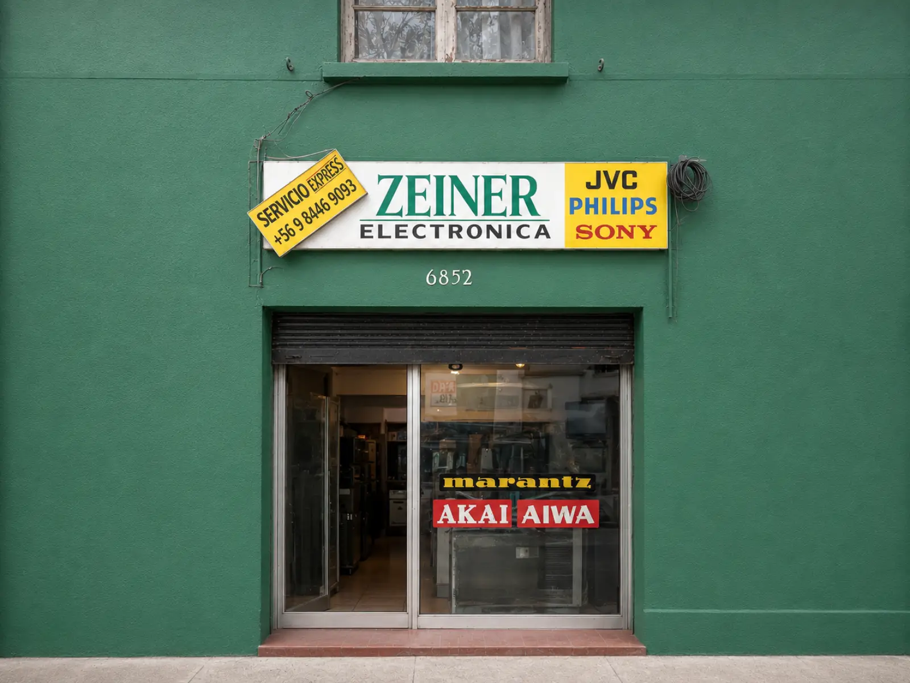
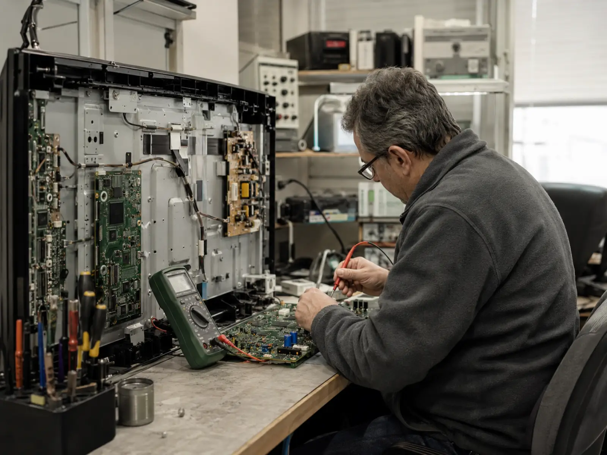

¿Tu televisor tiene problemas con los LEDs?
Reparamos televisores LED con pantalla oscura, pantalla negra con audio, imagen sin brillo, fallas de backlight, cambio de LEDs, fuente de poder y problemas de encendido. Trabajamos con Samsung, LG, Hisense, Sony y Master G. Diagnóstico técnico $10.000, descontable si aceptas la reparación.

Televisores LED
Cambio de LEDs, backlight, fuente de poder y fallas de encendido. Revisión de televisores Samsung, LG, Hisense, Sony y Master G.
Diagnóstico claro
El diagnóstico cuesta $10.000 y se descuenta del precio final si aceptas la reparación. Siempre se informa presupuesto antes de reparar.
Retiro a domicilio
Puedes traer el televisor al local o coordinar retiro por WhatsApp. El diagnóstico se realiza en el local.
Más de 30 años reparando equipos electrónicos con atención directa
ZEINER Electrónica es un servicio técnico de reparación electrónica con una trayectoria construida durante décadas de trabajo técnico, diagnóstico y atención cercana a clientes particulares.
Cada equipo se revisa con criterio técnico para identificar la falla antes de reparar. Trabajamos con televisores, sistemas LED, electrodomésticos y equipos electrónicos, entregando información clara, responsable y honesta antes de continuar.
Servicio técnico electrónico en La Reina: ZEINER Electrónica atiende en Leonardo Da Vinci 6852, entregando diagnóstico técnico y reparación electrónica para televisores LED, iluminación LED, equipos del hogar, audio, consolas y electrónica general. Puedes consultar por WhatsApp o teléfono antes de traer tu equipo o coordinar una revisión.

Diagnóstico antes de reparar
Revisamos el equipo para identificar la falla y explicarte las opciones antes de autorizar cualquier reparación.
Experiencia práctica
Más de 30 años de trabajo técnico en reparación electrónica, televisores, sistemas LED y equipos del hogar.
Atención directa
Comunicación clara por WhatsApp o teléfono, con información sobre diagnóstico, retiro, visita o reparación.
Servicios de reparación electrónica
Revisión técnica en La Reina para televisores LED, iluminación LED, lavadoras, refrigeradores, equipos de música, consolas y electrónica general. Atención en el local o diagnóstico a domicilio de acuerdo con el tipo de equipo y la falla.
Diagnóstico técnico $10.000
Revisamos el equipo para identificar la falla y definir los pasos antes de continuar. Puedes consultar por WhatsApp para coordinar atención en el local o a domicilio.
Televisores LED
Diagnóstico y reparación de televisores LED con fallas de encendido, imagen, sonido, fuente, placa principal, pantalla oscura o iluminación LED.
Consultar este servicioIluminación LED
Revisión y reparación de fallas asociadas a iluminación LED, tiras LED, fuentes de poder, conexiones y componentes electrónicos.
Consultar iluminación LEDLavadoras
Diagnóstico de lavadoras con fallas eléctricas, electrónicas o de funcionamiento, para identificar el origen del problema y evaluar reparación.
Consultar por lavadoraRefrigeradores
Revisión de refrigeradores con problemas de encendido, control, funcionamiento, componentes eléctricos o fallas que requieren diagnóstico técnico.
Consultar por refrigeradorEquipos de música
Revisión de equipos de música y audio con problemas de encendido, sonido, alimentación, conexiones, placas o fuentes de poder.
Consultar por audioConsolas
Revisión de consolas con fallas de encendido, conectores, imagen, alimentación u otros problemas electrónicos que requieran diagnóstico técnico.
Consultar por consolaElectrónica general
Diagnóstico de placas, fuentes, conexiones y otros equipos electrónicos. La posibilidad de reparación depende de la falla y disponibilidad de repuestos.
Consultar electrónica generalCómo trabajamos
Nuestro proceso es claro y directo: nos cuentas la falla, revisamos el equipo, informamos el diagnóstico y reparamos solo con tu aprobación.
Nos contactas
Escríbenos por WhatsApp o llámanos indicando el equipo, la marca o modelo si lo tienes, y la falla que tiene.
Realizamos el diagnóstico
Revisamos el equipo para identificar la falla. El diagnóstico técnico tiene un valor de $10.000 y permite definir los pasos de la reparación.
Informamos la falla y el presupuesto
Una vez revisado el equipo, te explicamos el problema detectado y el presupuesto antes de continuar con cualquier reparación.
Reparamos con aprobación
Reparamos solo si apruebas el presupuesto informado. Si no conviene reparar, te lo explicamos con claridad.
Entregamos el equipo probado
Al finalizar, coordinamos la entrega del equipo y las recomendaciones finales de acuerdo con el tipo de reparación realizada.
¿Necesitas revisar un equipo?
Podemos ayudarte por WhatsApp con los datos básicos del equipo y la falla que tiene.
Por qué elegir ZEINER Electrónica
Un servicio técnico con trayectoria, atención directa y diagnóstico claro para explicar cada reparación antes de continuar con el trabajo.
Diagnóstico claro antes de reparar
Revisamos el equipo para identificar la falla y explicarte las opciones antes de realizar cualquier reparación. El diagnóstico técnico tiene un valor de $10.000.
- Revisión técnica del equipo
- Explicación antes de reparar
- Presupuesto informado antes de reparar
Más de 30 años de experiencia técnica
ZEINER Electrónica cuenta con décadas de experiencia en reparación electrónica, especialmente en televisores, iluminación LED y equipos del hogar.
- Experiencia práctica en servicio técnico
- Trabajo técnico responsable
- Atención basada en oficio y trayectoria
Atención en el local o diagnóstico a domicilio
De acuerdo con el tipo de equipo y la falla, podemos atender en el local o coordinar diagnóstico a domicilio para revisar el problema.
- Contacto por WhatsApp o teléfono
- Coordinación de acuerdo con el tipo de equipo
- Información clara antes de reparar
Comunicación directa y reparación responsable
Recibes una explicación clara sobre la falla detectada, el presupuesto y los pasos recomendados antes de continuar con la reparación.
- Trato directo con ZEINER
- Información clara del diagnóstico
- Reparación autorizada por ti
Preguntas frecuentes
Resolvemos dudas comunes sobre diagnóstico, autorización de reparación, plazos referenciales y equipos que pueden revisarse según evaluación técnica.
Antes de traer o coordinar la revisión de tu equipo
Si tu televisor, lavadora, refrigerador, equipo de música o sistema LED tiene una falla, puedes contactarnos para revisar la información inicial y coordinar la atención.
Consultar por WhatsApp¿Qué equipos reparan?
Revisamos televisores LED, iluminación LED, lavadoras, refrigeradores, equipos de música, consolas y electrónica general. Cada caso se evalúa según la falla del equipo y la disponibilidad de repuestos.
¿Puedo consultar primero por WhatsApp?
Sí. Puedes escribir por WhatsApp indicando el tipo de equipo, marca o modelo si lo tienes, y una descripción breve de la falla. Con esa información podemos guiar la revisión inicial.
¿Reparan automáticamente después del diagnóstico?
No. Primero revisamos el equipo e informamos el diagnóstico o presupuesto. Reparamos solo con tu aprobación.
¿Cuánto demora una revisión?
Depende del tipo de equipo, la falla y la carga de trabajo del servicio técnico. ZEINER Electrónica te informa un plazo referencial después de recibir o revisar el equipo.
¿Entregan garantía por la reparación?
Las condiciones de garantía se informan según el tipo de reparación realizada, repuestos utilizados y evaluación técnica. Esta información debe quedar clara antes de la entrega del equipo.
¿Qué pasa si el equipo no tiene reparación?
Si la reparación no es conveniente o no es posible por la falla, el estado del equipo o la falta de repuestos, te lo informamos antes de realizar cualquier trabajo adicional.
¿Cuál es el valor del diagnóstico técnico?
El diagnóstico técnico tiene un valor de $10.000. Si la atención requiere condiciones distintas por tipo de equipo o domicilio, te lo informamos antes de continuar.
¿Realizan diagnóstico a domicilio?
Según el tipo de equipo, la ubicación y la falla informada, se puede coordinar diagnóstico a domicilio o indicar si conviene traer el equipo al local para una revisión más completa.
Contacto y ubicación
Escríbenos por WhatsApp, llámanos o visítanos en La Reina. También puedes enviar el formulario indicando el tipo de equipo y la falla que tiene.
Solicita una revisión o diagnóstico
Indica el tipo de equipo, la marca o modelo si lo tienes, y describe brevemente la falla. El diagnóstico técnico tiene un valor de $10.000.